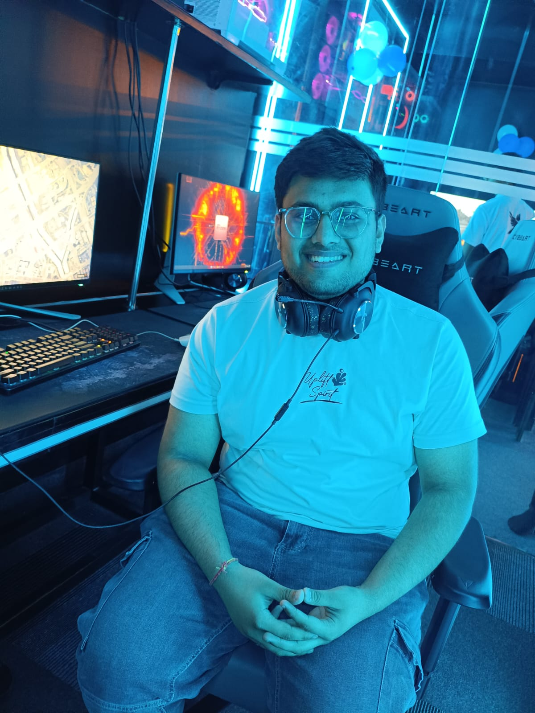

Get To Know Me
About Me
Hi! I’m Parth, a Computer Science student and an aspiring developer who enjoys turning ideas into real, working projects. I’m currently exploring Python, C++, Web Development, AI/ML, and Open Source, while continuously building my fundamentals through hands-on projects and problem-solving. From creating games with Pygame to working on AI-powered applications and hackathon ideas, I like learning by actually building things. I’m particularly curious about Artificial Intelligence and software development, and I’m always looking for opportunities to experiment with new technologies, collaborate with others, and understand how things work under the hood. Outside of coding, I enjoy exploring new ideas, participating in tech communities, and connecting with people who are equally curious about technology. Currently learning, building, experimenting, and trying to get a little better every day.
